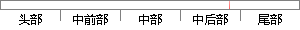

Android Studio, 版本号:2.
片段位置图

相似结果|
相似片段 1： Studio（版本号 3.0.0.18）和虚拟机 Genymotion（版本号 2.6.0）开发了移动客户端。Android Studio 是谷歌推出的一种全新的 Android 集成开发环境。相对于
相似片段 2：图 2.7 Java版本号第二步安装 Android Studio，首先在官网下载 Android Studio1.3.1 版本的安装包，按照提示一步一步进行安装直到提示安装成功，在软件自动
相似片段 3： Android Studio 进行开发，因为 Android Studio 有着如下优点：1.更快的启动和响应速度，更低的内存占用。2.更加强大的智能提示功能，支持颜色、图片在布局和代码中的实时预览
|
※ 片段修改建议 ※
近似词参考：